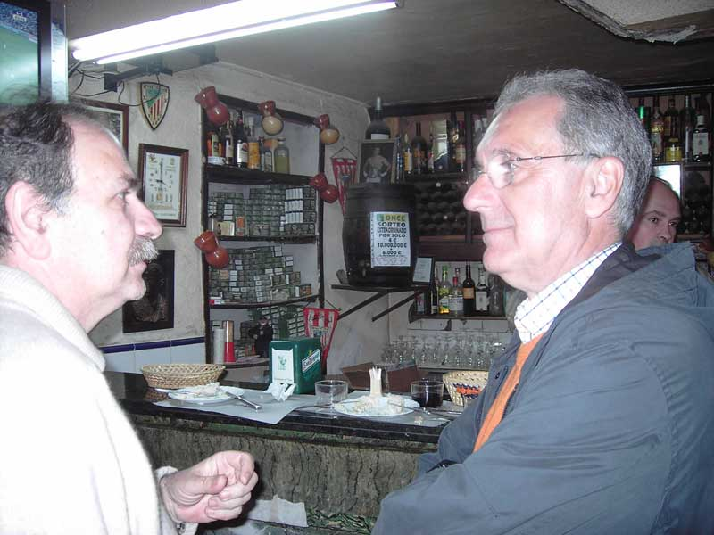

Encuentro en Santoña
Anterior
|
Inicio
|
Siguiente

Carlos comentando a Suso, lo grueso que era el chuletón de la comida. Sobre el mostrador, las anchoas con cabrales. Detrás de Suso, Alberto, el dueño.